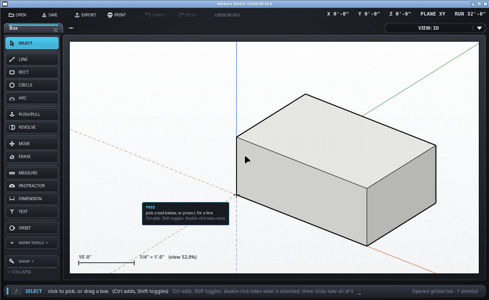

Which side is out, and why it matters.
Every face has a front and a back. The front is the side you are meant to see; the back is drawn in a pale blue so you can tell at a glance.
This is the one idea the rest of the page hangs off, and it is worth getting straight early: a face is what a closed run of edges encloses. You never draw a face. You draw edges, and wherever they close a flat loop a face appears in it. Rub out one of those edges and the loop is not closed any more, so the face goes - not because anything deleted it, but because there is nothing for it to be.

That last part is healing, and it is the way back from a face you did not mean to lose: draw the missing edge again where it was. It is the same gesture in SketchUp. It has to be the real edge, corner to corner - the snapping does the work if you let the ends find the corners.
For a drawing you are only going to print on paper, it does not matter at all.
Pick several and it turns all of them. The row says how many.
Push/pull, revolve and the wizards all get this right on their own - they know which way is out because they built the shape. Faces worked out from loose edges are the ones that can go either way, because a flat loop of lines has no outside until something decides.
/rebuild works the flat areas out again and settles them
against their neighbors, which fixes most of it in one go.
A face carries a material, which is its own thing and nothing to do with the color of the edges around it. Pick the face, and the entity panel has a Material row: Paint... makes it that color, at full strength, with the shading still doing its work so a box still reads as a box. Back to default returns it to the near-white every face starts as. Pick several faces and it paints all of them at once.
The back of a face stays pale blue whatever the front is painted, which is deliberate - the blue is information, not decoration.
/holes is the real test: it draws every edge that nothing
meets in red. A shape with no red is closed, and a closed shape has a
definite inside. See solids and 3D printing.